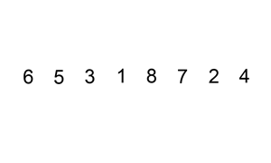
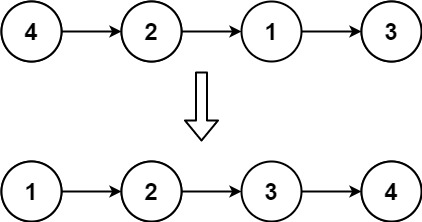
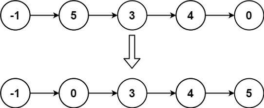

books / company-solutions / Linked List
147. 对链表进行插入排序
| 题目信息 | 内容 |
|---|---|
| 难度 | 中等 |
| 核心模式 | 维护已排序前缀，逐个把待插入节点摘下插入正确位置 |
| 时间复杂度 | O(n²) |
| 空间复杂度 | O(1) |
题目与约束
给定单个链表的头 head ，使用 插入排序 对链表进行排序，并返回 排序后链表的头 。
插入排序 算法的步骤:
-
插入排序是迭代的，每次只移动一个元素，直到所有元素可以形成一个有序的输出列表。
-
每次迭代中，插入排序只从输入数据中移除一个待排序的元素，找到它在序列中适当的位置，并将其插入。
-
重复直到所有输入数据插入完为止。
下面是插入排序算法的一个图形示例。部分排序的列表(黑色)最初只包含列表中的第一个元素。每次迭代时，从输入数据中删除一个元素(红色)，并就地插入已排序的列表中。
对链表进行插入排序。

示例 1：

<strong>输入:</strong> head = [4,2,1,3]
<strong>输出:</strong> [1,2,3,4]
示例 2：

<strong>输入:</strong> head = [-1,5,3,4,0]
<strong>输出:</strong> [-1,0,3,4,5]
提示：
-
列表中的节点数在
[1, 5000]范围内 -
-5000 <= Node.val <= 5000
核心不变量
dummy.next指向已排序的链表段，lastSorted指向该段的尾节点，curr是下一个待插入节点；每次把curr摘下并插入到已排序段中第一个大于它的节点之前。
完整推导
思路推导
- 插入排序的本质
把链表分成"已排序部分"和"未排序部分"，初始时只有第一个节点属于已排序部分。每一步取出未排序部分的第一个节点 curr，在已排序部分里从前往后找到合适位置插进去。
- 链表的痛点（无法从后往前挪）
数组插入排序通常从后往前比较并右移元素，但单链表没有前驱指针，做不到"回头"。解决办法是用一个 虚拟头结点 dummy，每次插入都从 dummy 开始往后扫描，找到第一个"下一个节点的值 > curr.val"的位置 prev，把 curr 插到 prev 之后。
- 两种情况（能省则省）
- 若
lastSorted.val <= curr.val，说明curr本来就在末尾且有序，直接把lastSorted后移一位即可，无需扫描。 - 否则从
dummy开始扫描，找到插入点后执行"摘下curr→ 接到prev后面"，lastSorted保持不变。
- 小例子（示例 1：
[4,2,1,3]）
curr=2：4>2，插到4前 →2 → 4 → 1 → 3curr=1：插到2前 →1 → 2 → 4 → 3curr=3：4>3，插到4前 →1 → 2 → 3 → 4
Java 实现（insertionSortList）
/**
* Definition for singly-linked list.
* public class ListNode {
* int val;
* ListNode next;
* ListNode() {}
* ListNode(int val) { this.val = val; }
* ListNode(int val, ListNode next) { this.val = val; this.next = next; }
* }
*/
class Solution {
public ListNode insertionSortList(ListNode head) {
if (head == null || head.next == null) {
return head;
}
ListNode dummy = new ListNode(0); // 虚拟头结点，方便在头部插入
dummy.next = head;
ListNode lastSorted = head; // 已排序段的尾节点
ListNode curr = head.next; // 当前待插入节点
while (curr != null) {
if (lastSorted.val <= curr.val) {
// 已有序，直接把它纳入已排序段
lastSorted = lastSorted.next;
} else {
// 从表头开始找第一个大于 curr 的位置
ListNode prev = dummy;
while (prev.next.val <= curr.val) {
prev = prev.next;
}
// 把 curr 从原位置摘下，插入到 prev 之后
lastSorted.next = curr.next;
curr.next = prev.next;
prev.next = curr;
}
// 注意：插入后 lastSorted 未变，下一个待插入节点仍是 lastSorted.next
curr = lastSorted.next;
}
return dummy.next;
}
}
复杂度
- 时间：O(n²)，最坏情况（逆序）每个节点都要从头扫描已排序段，总比较次数约为 n²/2。
- 空间：O(1)，只用了
dummy、lastSorted、curr、prev几个指针，原地排序。
易错点与扩展（面试高频考点）
- 忘记
dummy虚拟头结点：没有它，向头部插入和向中间插入需要两套逻辑，极易出错；dummy让所有插入都统一成"插到prev之后"。 curr的推进写错：插入完成后lastSorted没变，下一个待处理节点仍然是lastSorted.next，所以统一写curr = lastSorted.next；不要写成curr = curr.next（此时curr已被挪走）。- 比较符号：扫描用
prev.next.val <= curr.val找到第一个严格大于的位置，保证相等元素相对顺序稳定（插入排序稳定）。 lastSorted更新时机：只有走"已有序"分支才lastSorted = lastSorted.next；走插入分支时lastSorted必须保持不变。- 与数组插入排序对比：思路一致，但链表省去了"整体右移"的开销，插入本身是 O(1)，总复杂度由"查找插入点"决定，仍为 O(n²)。
力扣原题
C++ 实现
/**
* Definition for singly-linked list.
* struct ListNode {
* int val;
* ListNode *next;
* ListNode() : val(0), next(nullptr) {}
* ListNode(int x) : val(x), next(nullptr) {}
* ListNode(int x, ListNode *next) : val(x), next(next) {}
* };
*/
class Solution {
public:
ListNode* insertionSortList(ListNode* head) {
if (head == nullptr || head->next == nullptr) {
return head;
}
ListNode* dummy = new ListNode(0); // 虚拟头结点
dummy->next = head;
ListNode* lastSorted = head; // 已排序段尾节点
ListNode* curr = head->next; // 待插入节点
while (curr != nullptr) {
if (lastSorted->val <= curr->val) {
lastSorted = lastSorted->next;
} else {
ListNode* prev = dummy;
while (prev->next->val <= curr->val) {
prev = prev->next;
}
lastSorted->next = curr->next; // 摘下 curr
curr->next = prev->next;
prev->next = curr; // 插入到 prev 之后
}
curr = lastSorted->next;
}
return dummy->next;
}
};
Python 实现
from typing import Optional
# Definition for singly-linked list.
# class ListNode:
# def __init__(self, val=0, next=None):
# self.val = val
# self.next = next
class Solution:
def insertionSortList(self, head: Optional[ListNode]) -> Optional[ListNode]:
if not head or not head.next:
return head
dummy = ListNode(0) # 虚拟头结点
dummy.next = head
last_sorted = head # 已排序段尾节点
curr = head.next # 待插入节点
while curr:
if last_sorted.val <= curr.val:
last_sorted = last_sorted.next
else:
prev = dummy
while prev.next.val <= curr.val:
prev = prev.next
last_sorted.next = curr.next # 摘下 curr
curr.next = prev.next
prev.next = curr # 插入到 prev 之后
curr = last_sorted.next
return dummy.next